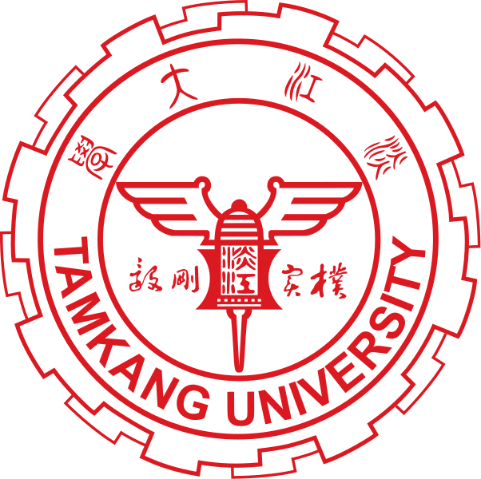

Tamkang University 
Tamkang University (TKU; Chinese: 淡江大學) is a private university in Taiwan, located in Tamsui District, New Taipei City, Taiwan. The school, founded in 1950 as a junior college of English literature, is today a comprehensive university comprising eleven colleges that serves nearly 30,000 students via four campus sites (three traditional, one online).
Brief History
Established in 1950 as a junior college of English, Tamkang first offered a two-year program and then a three-year
program. It was not until 1958, after it was reorganized as a College of Arts and Sciences, that Tamkang awarded bachelor's
degrees to its graduates. In 1980 Tamkang was elevated to the university status. Today, Tamkang University has 11 colleges
comprising 47 departments and divisions, 50 master's programs, and 17 doctoral programs. The total student enrollment
is 28,075 and the number of faculty and staff members is 2,288. The university has four campuses: the main campus in
the Tamsui District of New Taipei City, the Taipei City campus, the Lanyang campus in Jiaoxi Township in Yilan County,
and the online Cyber Campus.
Read more at:
http://english.tku.edu.tw/about/index.html
University of Electro-Communications
The University of Electro-Communications (電気通信大学 Denki-Tsūshin Daigaku) is a national university in the city of Chōfu, Tokyo, Japan. It specialises in the disciplines of computer science, the physical sciences, engineering and technology. It was founded in 1918 as the Technical Institute for Wireless-Communications.
Brief History
The University of Electro-communications was founded in the Azabu district, Tokyo city as the Technical Institute for
Wireless-Communications by Wireless Association in 1918. The Technical Institute for Wireless-Communications was transferred
to the Ministry of Communications in 1942 and renamed to the Central Technical Institute for Wireless-Communications
in 1945. Following to the transfer from the Ministry of Communications to the Ministry of Education in 1948, the University
of Electro-communications was established as a national university in 1949. The campus was moved to the city of Chōfu,
Tokyo in 1957. The university has been run by the National University Corporation since 2004.
Read more at:
https://www.uec.ac.jp/eng/about/